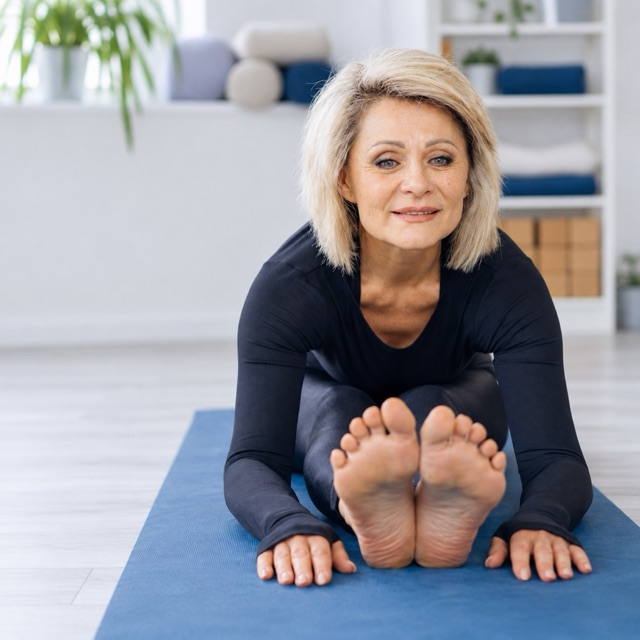
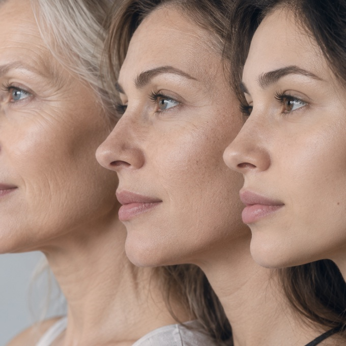

Біологічний вік: чому він важливіший за дату народження 15.08.2026Якщо вам 35+ і ви відчули «б’юті-вигорання» — процедури стали менш ефективними, набряки після уколів тримаються тижнями, а догляд «не працює» — це не вік.
Це сигнал: шкіра перебуває в стані клітинної гіпоксії та втратила свій регенеративний потенціал. Знизилась мікроциркуляція, виснажився запас фібробластів, зламалася міжклітинна комунікація. І будь-яка агресивна стимуляція в цей момент — це не допомога, а додаткове навантаження на орган, який потребує ресурсу.
«До нас приходять жінки з великими сумками. Всередині — дорогі креми, сироватки, ампули з активними компонентами. „Скажіть, вони хороші?“ — запитують вони.
Так. Склад якісний. Але чи вирішують вони вашу конкретну проблему — ніхто не знає. Бо ніхто не питав, яка у вас проблема насправді.»
Саме так і працює індустрія краси. Вона продає обіцянки та надію на результат — а не результат. Красива упаковка, модний інгредієнт, порада подруги або реклама в Instagram замінюють реальну діагностику. Ви купуєте, пробуєте, сподіваєтесь. Потім купуєте знову, потрапляючи в замкнене коло «б’юті-фастфуду».

Кожна шкіра — унікальна. Те, що дало «вау-результат» подрузі, може спровокувати у вас алергічну реакцію, набряк або прискорити фіброз. Синтетичні філери, які «всі роблять», з часом змінюють риси обличчя, порушують міміку, накопичуються в тканинах і ведуть до хронічного запалення. А агресивна стимуляція виснаженої шкіри не відновлює її — вона поглиблює проблему.
- Синтетичні філери змінюють риси, порушують міміку, накопичуються в тканинах
- Агресивна стимуляція виснаженої шкіри поглиблює проблему, а не відновлює
- Порада подруги замінює діагностику — і працює лише випадково
Чи знайомі вам такі стани?
- Ви витрачаєте більше — а якість шкіри та результат стають гіршими.
- Процедури доводиться робити частіше, ніж рік тому, а ефект тримається менше.
- Ви більше не пам’ятаєте, коли востаннє обличчя виглядало свіжим і природним без ін’єкцій.
- Ви боїтесь виглядати «зробленою» чи набряклою — але й залишати шкіру без допомоги страшно.
- Ви виснажені пошуком і більше не хочете ставити експерименти над власним обличчям.
01 / 05
Якщо хоча б один пункт про вас — ви прийшли в правильне місце.
Не гадаємо. Знаємо.
Спочатку — УЗД м’яких тканин, доплерографія судин та лабораторна оцінка кількості й якості ваших фібробластів. Ми вимірюємо регенеративний потенціал шкіри у точних цифрах. І тільки після цього розробляємо персональний протокол. Не за вашим віком. Не за модним трендом. За реальними даними вашого організму.
| Критерій | Як зазвичай | Face Control 365 |
|---|---|---|
| Основа рішення | Обіцянка і надія на результат | Точна діагностика і протокол під вас |
| Вибір методу | За порадою подруги чи тренду | Те, що потрібно саме вашій шкірі |
| Безпека | Синтетика, яка змінює обличчя | Ваші клітини — ваша індивідуальність |
| Системність | Хаотичні процедури без зв’язку | Прозорий річний протокол під супроводом лікаря |
Це я. Це моє.
Кріолізат тромбоцитів і фібробласти — це не препарат із флакона. Це ваш власний біологічний матеріал, створений індивідуально під вас. Організм отримує рідні сигнали — і відповідає справжнім відновленням.
- Передбачуваний результат здорова, ущільнена шкіра, що зберігає природну міміку та рідні риси
- Фінансова прозорість зафіксований річний бюджет без прихованих платежів і нав’язаних процедур
- Фундамент відновлена на клітинному рівні шкіра — база для будь-яких подальших процедур
ВАШІ клітини. ВАШ протокол. ВАШ результат — вимірюваний і передбачуваний.
Етапи річної подорожі